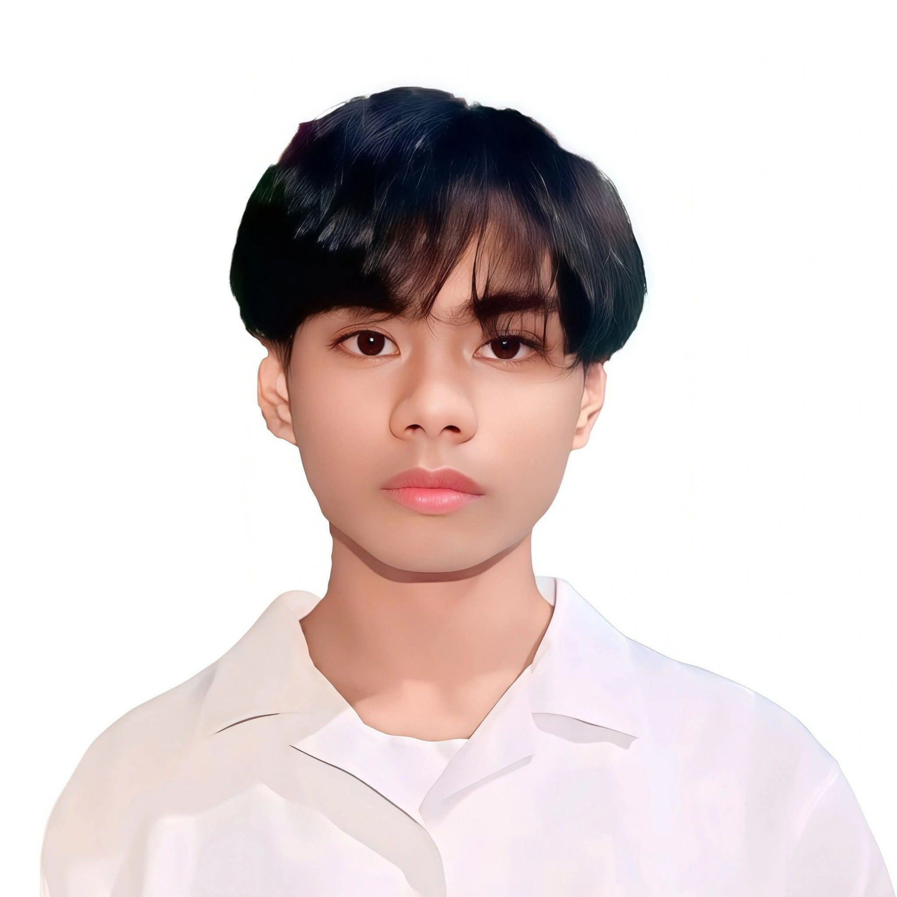

Curiosity
Asking questions and exploring how things work.
THE PERSON BEHIND THE PORTFOLIO
Get to know my background, education, and the things that inspire me.

MY INTRODUCTION
My name is Oriana, Roger Jr. M. I am a second-year college student taking Bachelor of Science in Information Technology at Bestlink College of the Philippines.
As an IT student, I'm learning how technology can solve problems and make everyday tasks easier. This portfolio is a place to present my learning journey, practice projects, and progress as I continue developing my skills.
Outside the classroom, I enjoy exploring new ideas and learning at my own pace. I'm excited to keep improving through practice, teamwork, and hands-on experience.
My goal is to strengthen my foundation in programming, web development, and problem-solving. I want to build useful, user-friendly projects and become more confident working with technology.
WHAT GUIDES ME
Asking questions and exploring how things work.
Learning from mistakes and improving step by step.
Staying patient and continuing even when a task is challenging.